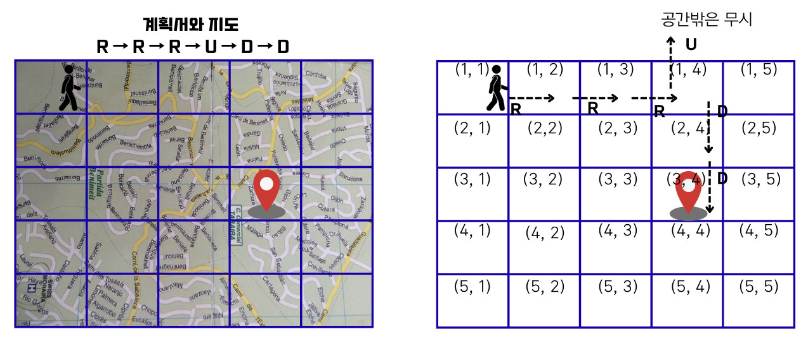

Lecture 1-1. 구현#
구현 (Implementation)#
구현 (implementation)이란, 머릿속으로 생각한 답을 프로그래밍 언어로 적는 것을 말한다. 특정 알고리즘을 지칭하는 말이 아니기 때문에 모든 문제 유형을 아우르는 단어일 수 있다. 하지만, 보통 구현문제는 머릿속으로 떠오르는 해결책은 간단하지만 소스 코드로 옮기는 데에는 힘든 문제들이 출제된다.
이번 강의에서는 완전 탐색과 시뮬레이션을 구현 유형으로 묶어서 다룬다. 완전 탐색이란 ‘모든 경우의 수’를 다 알고리즘으로 구현하는 것이고, 시뮬레이션이란 문제를 한 단계씩 ‘차례대로’ 직접 수행해야하는 문제 유형을 말한다.
메모리 제한#
문제를 파이썬 언어로 풀 때 주의해야할 부분은, 메모리 제한이다. 보통 코딩 테스트에서는 128 ~ 512 MB로 메모리를 제한하는데, 문제는 수백만 개 이상의 데이터를 처리해야하는 문제가 출제되곤 한다.
시스템 내부적으로 다음 표에서 보여주는 것과 유사한 크기만큼의 메모리를 차지한다.
데이터의 개수 (리스트의 길이) |
메모리 사용량 |
|---|---|
1,000 |
약 4KB |
1,000,000 |
약 4MB |
10,000,000 |
약 40MB |
시간 제한#
일반적인 테스트 환경에서는 파이썬으로 제출한 코드가 1초에 2,000만 번의 연산을 수행한다고 가정하면 된다. 예를 들어, 시간 제한이 1초이고, 데이터의 개수가 100만 개인 문제가 있다면 시간 복잡도 O(NlogN) 이내의 알고리즘을 이용하여 문제를 풀어야 한다. N =1000,000 일 때, \(Nlog_{2}{N}\)은 약 20,000,000이기 때문이다.
정리
구현문제는 완전 탐색과 시뮬레이션으로 나뉜다.
알고리즘 문제를 풀 때는 시간 제한 (파이썬 기준 1초 2,000 만번 연산)과 데이터의 개수를 먼저 확인한 뒤, 시간 복잡도 계산 후 그에 맞는 알고리즘을 사용해 작성해야한다.
아직 여러 알고리즘을 배우진 않았지만, 각 시간 복잡도와 알고리즘을 매칭하여 나타내었다. 또한 아래 표의 O(logN)부터 O(\(2^n\)) 순서로 빠른 복잡도부터 가장 느린 복잡도를 나타내었다.
복잡도 |
특징 |
|---|---|
O(logN) |
이진 탐색 (bisect_left) |
O(N) |
입력 크기에 비례 |
O(NlogN) |
정렬 알고리즘 (merge sort, quick sort) 등 |
O(\(N^2\)) |
중첩 반복문, brute-force 탐색 |
O(\(2^n\)) |
백트레킹 모든 부분집합 탐색 (가장 느림) |
어떤 문제를 만나든 메모리와 시간을 염두해 두고 알고리즘을 선택해서 구현해야한다.
예제#
구현 문제는 예시로 이해하는 것이 빠르기 때문에, 몇 개의 예시 문제를 풀어보면서 개념을 다져보도록 하자.
상하좌우#
난이도 하 | 제한 시간 1초 | 메모리 제한 128 MB
여행가 A는 NxN 크기의 정사각형 공간 위에 서 있다. 이 공간은 1x1 크기의 정사각형으로 나누어져 있다. 가장 왼쪽 위 좌표는 (1,1)이며, 가장 오른쪽 아래 좌표는 (N,N)에 해당한다. 여행가 A는 상, 하, 좌, 우 방향으로 이동할 수 있으며, 시작 좌표는 항상 (1,1)이다. 우리 앞에는 여행가 A가 이동할 계획이 적힌 계획서 (아래 그림)가 놓여 있다.
{kind=link}
계획서에는 하나의 줄에 띄어쓰기를 기준으로 하여 L, R, U, D 중 하나의 문자가 반복적으로 적혀 있다. 각 문자의 의미는 다음과 같다.
L: 왼쪽으로 한 칸 이동
R: 오른쪽으로 한 칸 이동
U: 위로 한 칸 이동
D: 아래로 한 칸 이동
이때 여행가 A가 N x N 크기의 정사각형 공간을 벗어나는 움직임은 무시된다. 예를 들어 (1, 1)의 위치에서 L혹은 U를 만나면 무시된다. 다음은 N=5인 지도와 계획서이다.
{kind=link}
이 경우 6개의 명령에 따라서 여행가가 움직이게 되는 위치는 순서대로 (1,2), (1,3), (1,4), (1,4), (2,4), (3,4) 이므로, 최종적으로 여행가 A가 도착하게 되는 곳의 좌표는 (3,4)이다. 다시 말해 3행 4열의 위치에 해당하므로 (3,4)라고 적는다. 계획서가 주어졌을 때 여행가 A가 최종적으로 도착할 지점의 좌표를 출력하는 프로그램을 작성하시오.
조건
입력 조건
첫째 줄에 공간의 크기를 나타내는 정수 N이 주어진다. (1 ≤ N ≤ 100)
둘째 줄에 여행가 A가 이동할 계획서 내용이 주어진다. (1 <= 이동 횟수 <= 100)
출력 조건
첫째 줄에 여행가 A가 최종적으로 도착할 지점의 좌표 (X, Y)를 공백으로 구분하여 출력한다.
입력 예시
5
R R R U D D
출력 예시
3 4
해설
이 문제를 요구사항대로 구현하면 연산 횟수는 이동 횟수에 비례하게 된다. 예를 들어, 이동 횟수가 N번인 경우 시간 복잡도는 O(N)이다.
정답 코드
# N을 입력받기
n = int(input())
x, y = 1, 1
plans = input().split()
# L, R, U, D에 따른 이동 방향
dx = [0, 0, -1, 1]
dy = [-1, 1, 0, 0]
move_types = ['L','R','U','D']
# 이동 계획을 하나씩 확인
for plan in plans:
# 이동 후 좌표 구하기
for i in range(len(move_types)):
if plan == move_types[i]:
nx = x + dx[i]
ny = y + dy[i]
break
# 공간을 벗어나는 경우 무시
if nx < 1 or ny < 1 or nx > n or ny > n:
continue
# 이동 수행
x, y = nx, ny
print(x, y)
시각#
난이도 하 | 시간 제한 2초 | 메모리 제한 128 MB
정수 N이 입력되면 00시 00분 00초부터 N시 59분 59초까지의 모든 시각 중에서 3이 하나라도 포함되는 모든 경우의 수를 구하는 프로그램을 작성하시오. 예를 들어 1을 입력했을 때 다음은 3이 하나라도 포함되어 있으므로 세어야하는 시각이다.
00시 00분 03초
00시 13분 30초
반면에 다음은 3이 하나도 포함되어 있지 않으므로 세면 안 되는 시각이다.
00시 02분 55초
01시 27분 45초
조건
입력 조건
첫째 줄에 정수 N이 입력된다. (0 <= N <= 23)
출력 조건
00시 00분 00초부터 N시 59분 59초까지의 모든 시각 중에서 3이 하나라도 포함되는 모든 경우의 수를 출력한다.
입력 예시
5
출력 예시
11475
문제 해설
이 문제는 모든 시각의 경우를 하나씩 모두 세서 쉽게 풀 수 있는 문제다. 왜하면 하루는 86,400초로, 00시 00분 00초부터 23시 59분 59초까지의 모든 경우는 86,400가지 밖에 존재하지 않기 때문이다. 다시 말해 경우의 수가 100,000개도 되지 않으므로 파이썬에서 문자열 연산을 이용해 3이 시각에 포함되어 있는지 확인해도 시간 제한 2초 안에 문제를 해결할 수 있다. 따라서 단순히 시각을 1씩 증가시키면서 3이 하나라도 포함되어 있는지 확인하면 될 것이다. 전체 시, 분, 초 대한 경우의 수는 24 x 60 x 60 이며 3중 반복문을 이용해 계산할 수 있다.
이런 유형은 완전 탐색 (Brute forcing) 유형으로도 분류된다. 일반적으로 알고리즘 문제를 풀 때는 확인 (탐색)해야 할 전체 데이터의 개수가 100만개 이하일 때 완전 탐색을 사용하면 적절하다.
정답 풀이
# H를 입력받기
H = int(input())
count = 0
for h in range(H):
for m in range(60):
for s in range(60):
if '3' in str(h) or '3' in str(m) or '3' in str(s):
count += 1
print(count)
왕실의 나이트#
난이도 하 | 시간 제한 1초 | 메모리 제한 128 MB
행복 왕국의 왕실 정원은 체스판과 같은 8x8 좌표 정면이다. 왕실 정원의 특정한 한 칸에 나이트가 서있다. 나이트는 매우 충성스러운 신하로서 매일 무술을 연마한다. 나이트는 말을 타고 있기 때문에 이동을 할 때는 L자 형태로만 이동할 수 있으며 정원 밖으로는 나갈 수 없다. 나이트는 특정한 위치에서 다음과 같은 2가지 경우로 이동할 수 있다.
수평으로 두 칸 이동한 뒤에 수직으로 한 칸 이동하기
수직으로 두 칸 이동한 뒤에 수평으로 한 칸 이동하기
{kind=link}
이처럼 8x8 좌표 평면상에서 나이트의 위치가 주어졌을 때 나이트가 이동할 수 있는 경우의 수를 출력하는 프로그램을 작성하시오. 이때 왕실의 정원에서 행 위치를 표현할 때는 1부터 8로 표현하며, 열 위치를 표현할 때는 a부터 h로 표현한다.
예를 들어 만약 나이트가 a1에 있을 때 이동할 수 있는 경우의 수는 다음 2가지이다. a1의 위치는 좌표 평면에서 구석의 위치에 해당하며 나이트는 정원의 밖으로는 나갈 수 없기 때문이다.
오른쪽으로 두 칸 이동 후 아래로 한 칸 이동하기 (c2)
아래로 두 칸 이동 후 오른쪽으로 한 칸 이동하기 (b3)
또 다른 예로 나이트가 c2에 위치해 있다면 나이트가 이동할 수 있는 경우의 수는 6가지이다.
조건
입력 조건
첫째 줄에 8x8 좌표 평면상에서 현재 나이트가 위치한 곳의 좌표를 나타내는 두 문자로 구성된 문자열이 입력된다. 입력 문자는 a1처럼 열과 행으로 이뤄진다.
출력 조건
첫째 줄에 나이트가 이동할 수 있는 경우의 수를 출력하시오.
입력 예시
a1
출력 예시
2
문제 해설
나이트가 이동할 수 있는 경로를 하나씩 확인하여 이동하면 된다.
풀이
#이동할 수 있는 8가지 경우
dx = [2, 2, -2, -2, 1, -1, 1, -1]
dy = [1, -1, 1, -1, -2,-2, 2, 2]
pos = input()
cur_x = ord(pos[0]) - ord('a') + 1 # 1부터 시작하도록
cur_y = int(pos[1])
# print(cur_x, cur_y)
cnt = 0
for nxt in range(8):
# 이동하고자 하는 위치 확인
nx = cur_x + dx[nxt]
ny = cur_y + dy[nxt]
# 해당 위치로 이동이 가능하다면 카운트 증가
if nx <1 or ny <1 or nx>8 or ny >8 :
continue
cnt += 1
print(cnt)
게임 개발#
난이도 중 | 시간 제한 1초 | 메모리 제한 128 MB
현민이는 게임 캐릭터가 맵 안에서 움직이는 시스템을 개발 중이다. 캐릭터가 있는 장소는 1x1 크기의 정사각형으로 이뤄진 NxM크기의 직사각형으로, 각각의 칸은 육지 또는 바다이다. 캐릭터는 동서남북 중 한 곳을 바라본다.
맵의 각 칸은 (A, B)로 나타낼 수 있고, A는 북쪽으로부터 떨어진 칸의 개수, B는 서쪽으로부터 떨어진 칸의 개수이다. 캐릭터는 상하좌우로 움직일 수 있고, 바다로 되어 있는 공간에는 갈 수 없다. 캐릭터의 움직임을 설정하기 위해 정해 놓은 메뉴얼은 이러하다.
현재 위치에서 현재 방향을 기준으로
왼쪽 방향(반시계 방향으로 90도 회전한 방향)부터 차례대로 갈 곳을 정한다.캐릭터의 바로 왼쪽 방향에 가보지 않은 칸이 없다면, 왼쪽 방향으로 회전만 수행하고 1단계로 돌아간다.
만약 네 방향 모두 이미 가본 칸이거나 바다로 되어 있는 칸인 경우에는, 바라보는 방향을 유지한 채롤 한 칸 뒤로 가고 1단계로 돌아간다. 단, 이때 뒤쪽 방향이 바다인 칸이라 뒤로 갈 수 없는 경우에는 움직임을 멈춘다.
현민이는 위 과정을 반복적으로 수행하면서 캐릭터의 움직임에 이상이 있는지 테스트하려고 한다. 메뉴얼에 따라 캐릭터를 이동시킨 뒤에, 캐릭터가 방문한 칸의 수를 출력하는 프로그램을 만드시오.
조건
입력 조건
첫째 줄에 맵의 세로 크기 N과 가로 크기 M을 공백으로 구분하여 입력한다. (3 <= N, M <= 50)
둘째 줄에 게임 캐릭터가 있는 칸의 좌표 (A,B)와 바라보는 방향 d가 각각 서로 공백으로 구분하여 주어진다. 방향 d의 값으로는 다음과 같이 4가지가 존재한다.
0: 북쪽
1: 동쪽
2: 남쪽
3: 서쪽
셋째 줄부터 맵이 육지인지 바다인지에 대한 정보가 주어진다. N개의 줄에 맵의 상태가 북쪽부터 남쪽 순서대로, 각 줄의 데이터는 서쪽부터 동쪽 순서대로 주어진다. 맵의 외곽은 항상 바다로 되어 있다.
0: 육지
1: 바다
처음에 게임 캐릭터가 위치한 칸의 상태는 항상 육지이다.
출력 조건
첫째 줄에 이동을 마친 후 캐릭터가 방문한 칸의 수를 출력한다.
입력 예시
4 4 # 4x4맵 생성
1 1 0 # (1, 1)에 북쪽 (0)을 바라보고 서 있는 캐릭터
1 1 1 1 # 첫 줄은 모두 바다
1 0 0 1 # 바다/육지/육지/바다
1 1 0 1 # 바다/바다/육지/바다
1 1 1 1 # 바다/바다/바다/바다
출력 예시
3
문제 해설
전형적인 시뮬레이션 문제이다. 별도의 알고리즘이 필요하기보다 문제에서 요구하는 내용을 오류 없이 성실하게 구현만 할 수 있다면 풀 수 있다.
풀이
N, M = map(int, input().split()) # N, M을 공백으로 구분하여 입력받기
x, y, direction = map(int, input().split())
graph = []
for n in range(N):
graph.append(list(map(int, input().split())))
# print(graph)
# 현재 좌표 방문 처리
graph[x][y] = 2
# 차례대로 북, 동, 남, 서일때 방향을 유지한채로 뒤로 가는 방향
dx = [0,-1,0 ,1]
dy = [1,0,-1,0]
count = 1 # 현재 있는 곳부터 카운트
# 시뮬레이션 시작
turn_time = 0
while True:
# 왼쪽 방향부터 차례대로 갈 곳을 정한다.
# 다음 위치 및 방향
direction = (direction+3)%4 # 방향은 바뀐 후에는 계속 유지
nx = x + dx[direction]
ny = y + dy[direction]
# 갈 곳이 있는 지 확인
if nx <0 or ny <0 or nx >= N or ny >= M: # 그래프 밖
turn_time += 1
continue
if graph[nx][ny] == 0: # 갈 수 있으면
graph[nx][ny] = 2 # 방문처리
x = nx # 이동
y = ny
count += 1
turn_time = 0
continue
else: # 바다 혹은 방문한 곳
turn_time += 1
# 네 방향 모두 가본 칸이거나 바다인 경우
# 방향을 유지한채로 "한 칸 뒤"로 간다.
if turn_time == 4:
nx = x - dx[direction]
ny = y - dy[direction]
# if dx < 0 or dy <0 or dx >= N or dy >= M: # 한 칸 뒤가 벽으로 막혀있는 경우는 문제에서 취급하지 않음
if graph[nx][ny] == 0:
x = nx
y = ny
else: # 만약 바다나 이미 간 곳이라 못 가면 멈춤
break
turn_time = 0 # 다시 turn_time 초기화
print(count)